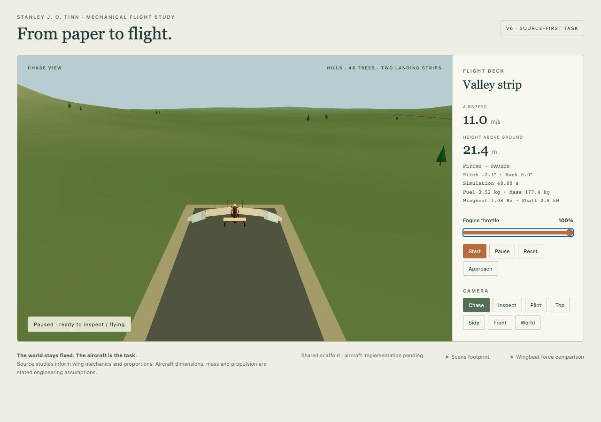
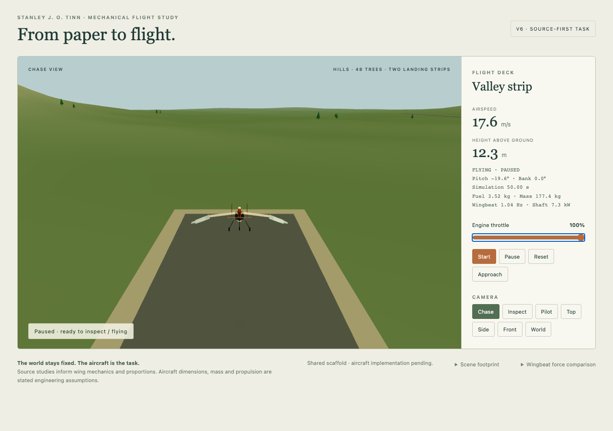
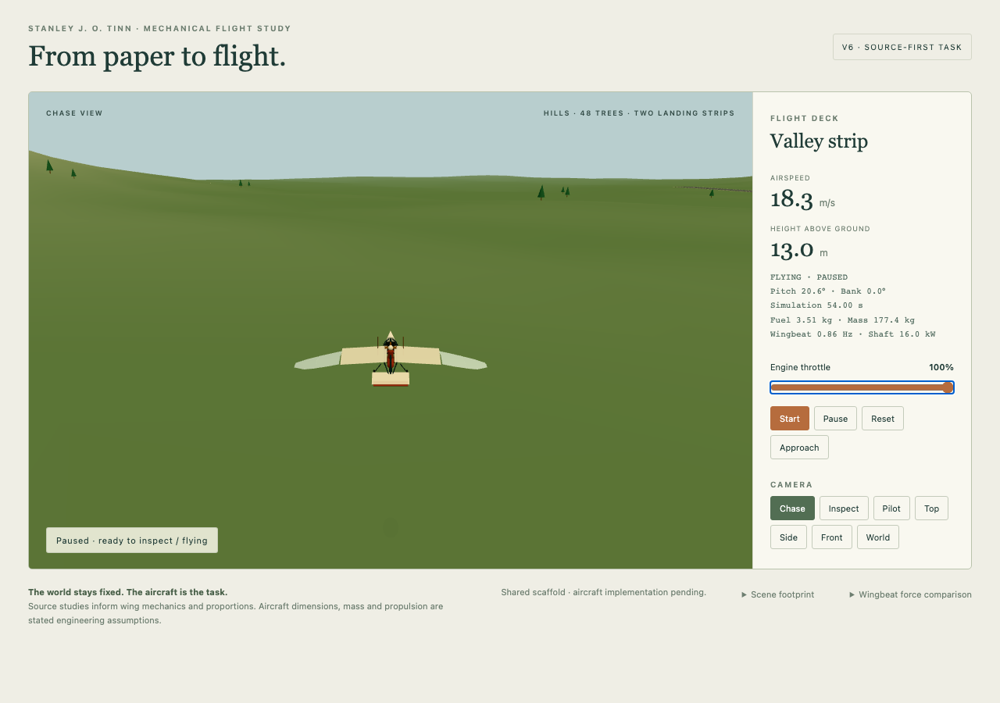
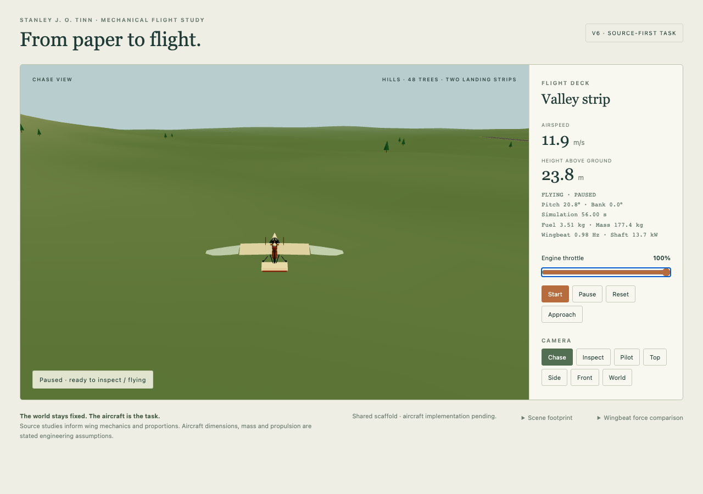
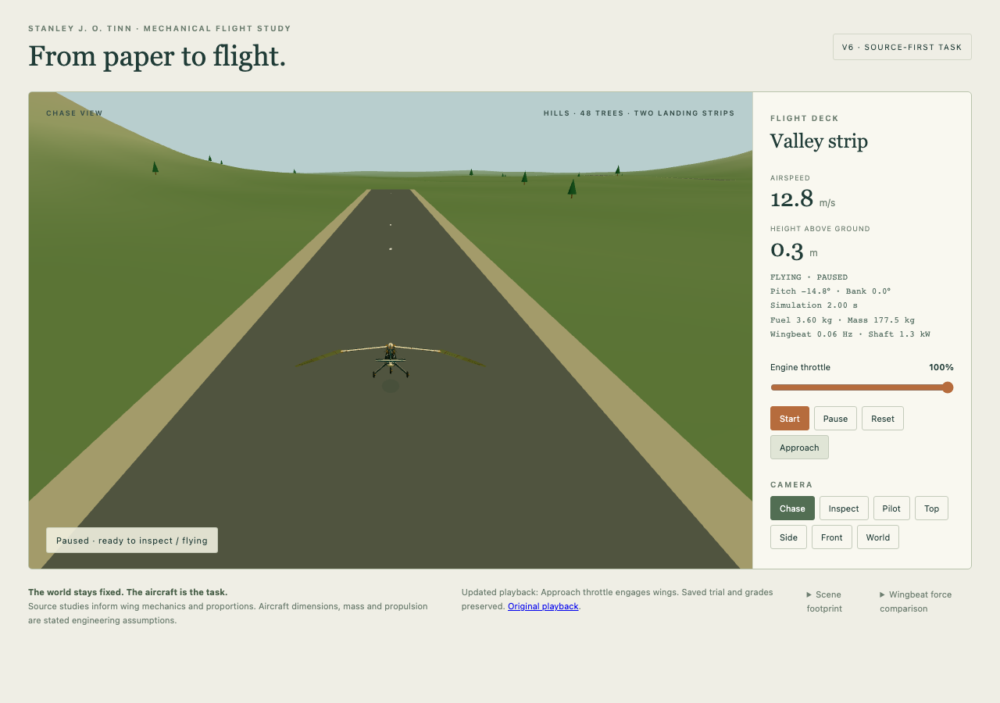

The unchanged GPT-5.6 Sol submission repeatedly moves from about20° nose-down to26° nose-up with full throttle and neutral pilot input. The former runway grader used a pitch controller, hiding this slow mode. The fast, small wingbeat response is a separate effect.
Longer flight telemetry · Exact new binary probe on the old submission · V7 calibration




Zero throttle preserves the initial glide. Raising the slider or pressing W releases the glide clutch and lets the finite engine spin up the wings. Reducing power coasts the mechanism. Saved model code and grades are unchanged; this is an explicitly labelled host-control playback fix.
Slider, keyboard, coasting and original-playback verification

V6's handwritten reference also hunted under neutral input. V7 makes one explicit engineering correction: illustrative pitch damping140→1000 N m s/rad, with dissipation included. The revised author reference passes all seven checks, and all nine deliberate defects fail their targets. Published v6 scores are preserved. No new model generation was made for this investigation.